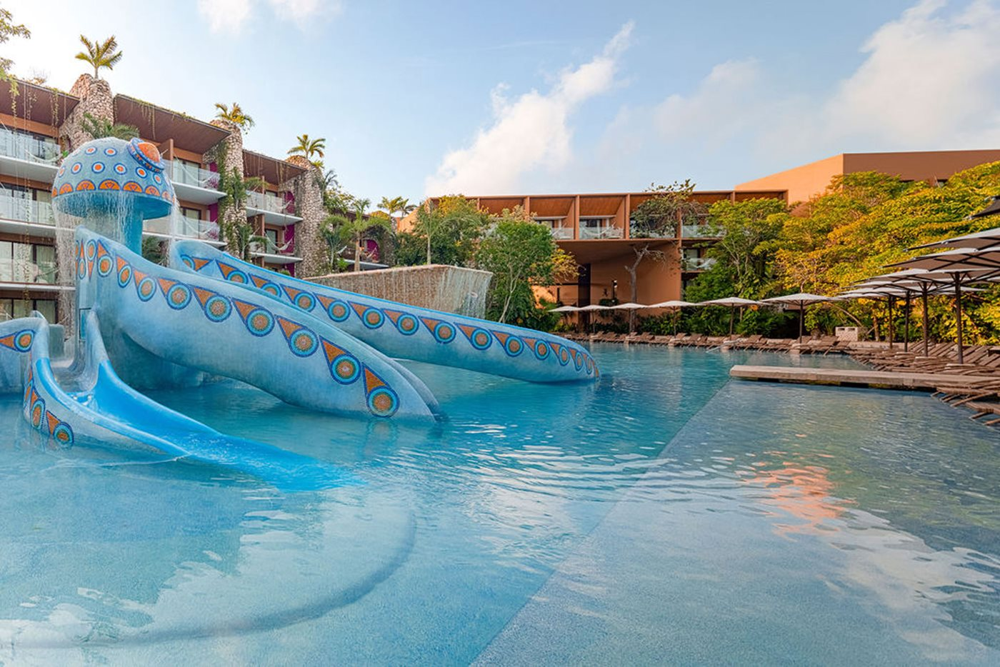
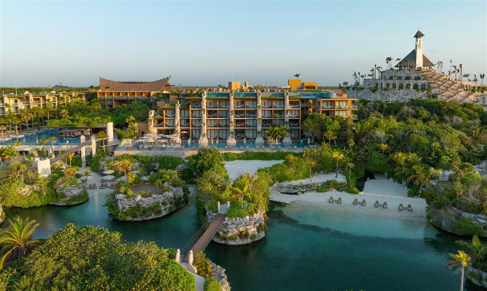
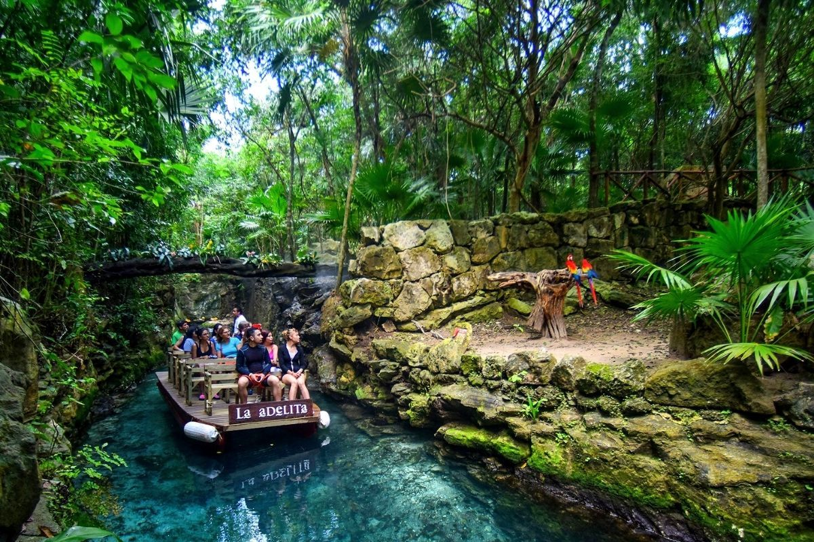

Conheça alguns pontos turísticos famosos no México
O turismo figura como uma relevante atividade econômica para o México, o qual ocupa um lugar de destaque nesse segmento em escala mundial.
Chichén Itzá
Um dos sítios arqueológicos mais famosos do México. São estruturas de ruínas maias na Península de Yucatáns (parte Sul do país que separa o Golfo do México do Mar do Caribe).
A enorme pirâmide com degraus é conhecida como El Castillo e domina a cidade antiga de 6,5 quilómetros quadrados, que prosperou de 600 d.C. até ao século XIII.
Palácio de Bellas Artes
Um dos principais centros culturais do México, sendo o principal teatro de ópera da Cidade do México.
É famoso pela sua arquitetura exterior, em estilo Beaux Arts utilizando mármore branco de Carrara, e pelos seus murais interiores. Com capacidade de até 1.705 pessoas.



Parque Xcaret
Parque ecológico com atrações naturais e culturais que combina natureza, cultura maia e atrações temáticas.
É um local muito popular para fotos e experiências em família, e possui mais de 50 atrações.
Castelo de Chapultepec
Um dos monumentos históricos mais importantes do México, localizado na Cidade do México.
É localizada no alto de uma colina, no centro do Bosque de Chapultepec, a uma altura de 2.325 metros acima do nível do mar, integrando o Parque de Chapultepec.
Construído no final do século XVIII e já foi sede do Colégio Militar, residência imperial e presidencial.
Playa del Carmen
Uma das praias mais belas do México, conhecida por suas águas cristalinas e areia branca, sendo também um dos principais destinos turísticos do México
É localizado no coração da Riviera Maia, no Caribe Mexicano.